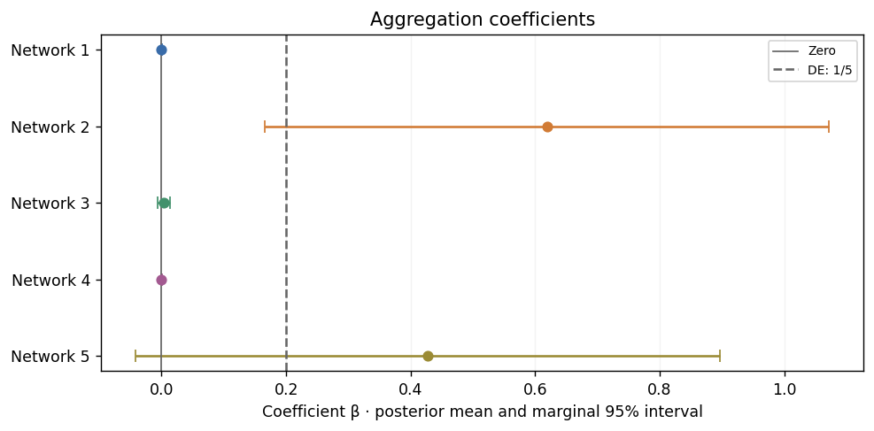
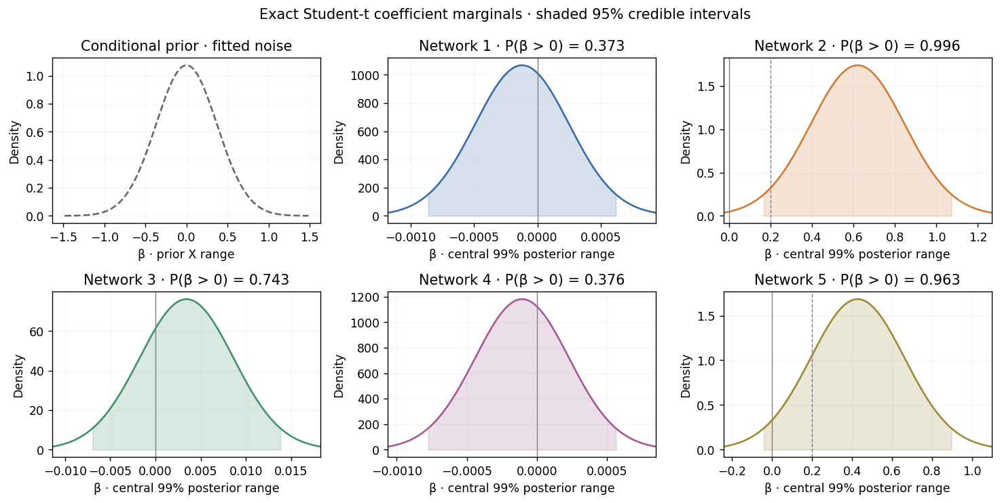
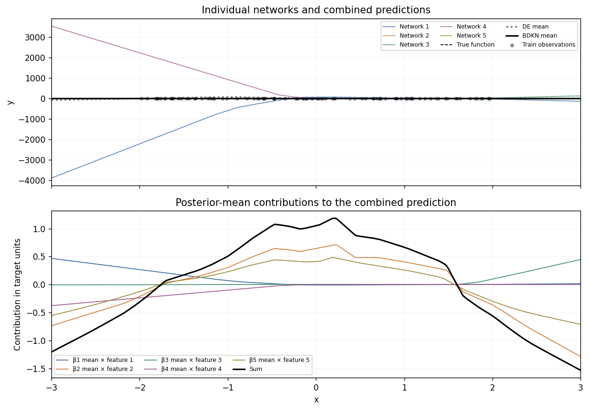
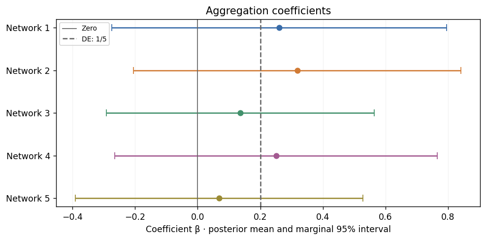
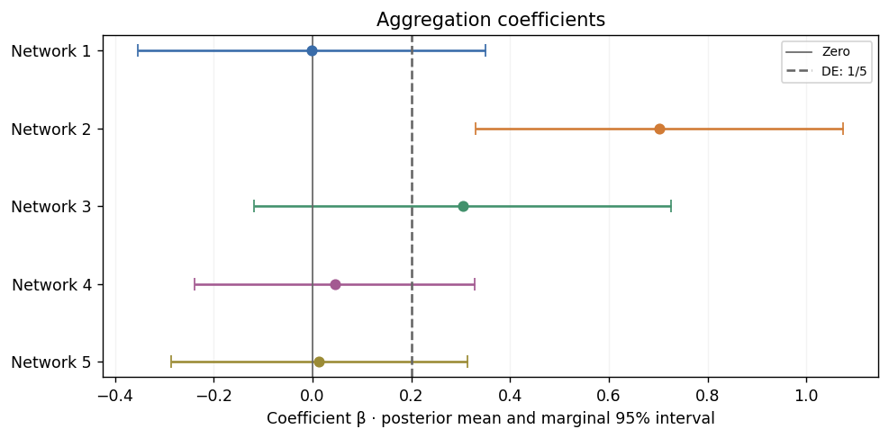
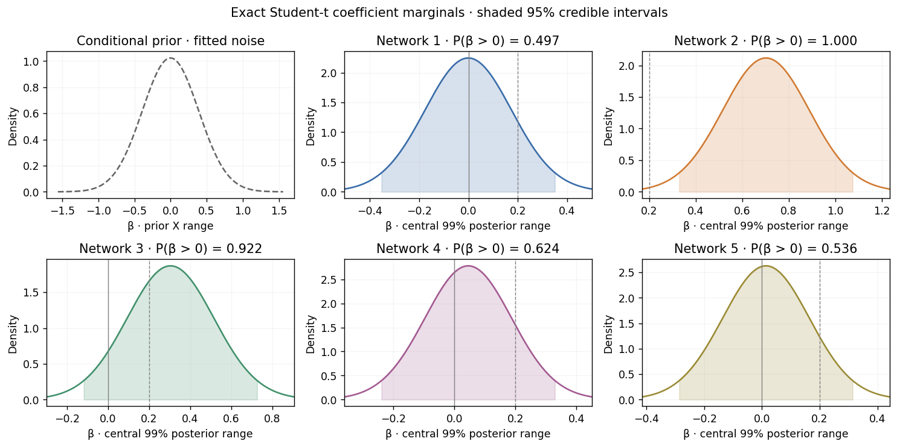
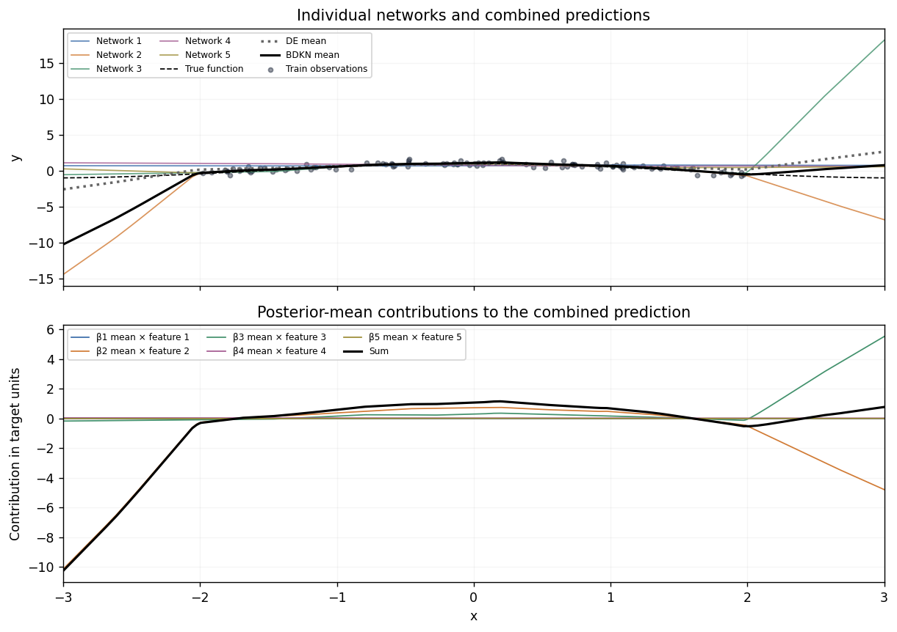

Regression comparison
Download resultsAggregation weights
Coefficients can be negative and need not sum to one. Intervals describe coefficient uncertainty; the dashed reference is DE’s fixed 1/H weight.
BDKN


Each density panel uses its own X range for readability; coefficient intervals above share a common axis. Prior reference conditions on fitted noise. Contribution shares use held-out inputs; test targets are used only for scoring.
| Network | β mean | 95% low | 95% high | P(β > 0) | Contribution share | Test RMSE | Test NLL |
|---|---|---|---|---|---|---|---|
| 1 | 0.29299 | -0.30370 | 0.88968 | 0.83384 | 0.29080 | 0.40601 | 2.19498 |
| 2 | 0.32588 | -0.25627 | 0.90802 | 0.86530 | 0.30631 | 0.35829 | 0.97832 |
| 3 | 0.09065 | -0.39933 | 0.58062 | 0.64282 | 0.08804 | 0.33808 | 1.01757 |
| 4 | 0.27580 | -0.29841 | 0.85002 | 0.82854 | 0.26186 | 0.32456 | 1.46765 |
| 5 | 0.05188 | -0.50796 | 0.61171 | 0.57274 | 0.05300 | 0.38945 | 2.51700 |
Functional repulsion · BDKN



Each density panel uses its own X range for readability; coefficient intervals above share a common axis. Prior reference conditions on fitted noise. Contribution shares use held-out inputs; test targets are used only for scoring.
| Network | β mean | 95% low | 95% high | P(β > 0) | Contribution share | Test RMSE | Test NLL |
|---|---|---|---|---|---|---|---|
| 1 | -0.00012 | -0.00086 | 0.00062 | 0.37334 | 0.09064 | 1345.54992 | 25.81161 |
| 2 | 0.61897 | 0.16601 | 1.07193 | 0.99605 | 0.46287 | 0.40684 | 1.82264 |
| 3 | 0.00343 | -0.00694 | 0.01380 | 0.74320 | 0.05245 | 35.39379 | 15.90671 |
| 4 | -0.00011 | -0.00077 | 0.00056 | 0.37605 | 0.08113 | 1325.95096 | 19.75997 |
| 5 | 0.42743 | -0.04134 | 0.89621 | 0.96327 | 0.31291 | 0.36824 | 3.06634 |
Weight repulsion · BDKN



Each density panel uses its own X range for readability; coefficient intervals above share a common axis. Prior reference conditions on fitted noise. Contribution shares use held-out inputs; test targets are used only for scoring.
| Network | β mean | 95% low | 95% high | P(β > 0) | Contribution share | Test RMSE | Test NLL |
|---|---|---|---|---|---|---|---|
| 1 | 0.26017 | -0.27423 | 0.79458 | 0.83178 | 0.23552 | 11.96102 | 98.26582 |
| 2 | 0.31846 | -0.20438 | 0.84130 | 0.88514 | 0.20350 | 9.04143 | 2823.54364 |
| 3 | 0.13616 | -0.29123 | 0.56355 | 0.73560 | 0.18277 | 18.54875 | 31995.29877 |
| 4 | 0.25050 | -0.26450 | 0.76551 | 0.83157 | 0.37017 | 18.74453 | 50.92757 |
| 5 | 0.06902 | -0.39010 | 0.52814 | 0.61693 | 0.00804 | 0.70320 | 55954.15857 |
First-order repulsion · BDKN



Each density panel uses its own X range for readability; coefficient intervals above share a common axis. Prior reference conditions on fitted noise. Contribution shares use held-out inputs; test targets are used only for scoring.
| Network | β mean | 95% low | 95% high | P(β > 0) | Contribution share | Test RMSE | Test NLL |
|---|---|---|---|---|---|---|---|
| 1 | -0.00117 | -0.35281 | 0.35048 | 0.49738 | 0.00039 | 1.02467 | 1.14632 |
| 2 | 0.70228 | 0.32960 | 1.07495 | 0.99985 | 0.70310 | 3.36086 | 1476.65750 |
| 3 | 0.30412 | -0.11796 | 0.72620 | 0.92201 | 0.27661 | 4.61895 | 4.80477 |
| 4 | 0.04516 | -0.23870 | 0.32902 | 0.62354 | 0.01671 | 1.10643 | 1.21391 |
| 5 | 0.01377 | -0.28657 | 0.31410 | 0.53614 | 0.00319 | 0.73660 | 1.61312 |